Home / Browns / 003 Brown Georgennea
003 Brown Georgennea
Pictures related to Georgennea Brown.
← Return to Browns
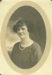
brn003-00001
Portrait of Georgennea Brown, est. 1905-1910. There are 2 copies of the portrait. Dad captioned one "Georgennea Brown." Updated: 7 May 2006
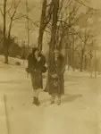
brn003-00002
192x est Georgenna and Unknown Updated: 6 May 2006
brn003-00002a
Updated: 6 May 2006
brn003-00002b
Updated: 6 May 2006
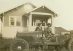
brn003-00003
192x Georgenna and Martha Brown with car in front of house. Georgenna Brown (left) and Martha (Brown) Jenkins. Updated: 5 Jun 2005
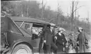
brn003-00004
192x Georgenna and Martha Brown with Walter, W.I. Jr. in car. Left to Right: W.I. Jenkins, Martha (Brown) Jenkins, Grafton?, W.I. Jr.?, Georgenna Brown. Updated: 5 Jun 2005
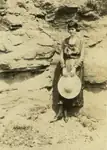
brn003-00005
192x Georgenna at rock wall. Georgenna Brown, c. 1910-1915. Updated: 5 Jun 2005
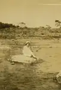
brn003-00006
192x Georgenna Brown on river rock. Georgenna Brown, c. 1920s. Updated: 5 Jun 2005
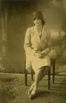
brn003-00007
Georgenna Brown, c. 1930s, signed to Jerry. Note how she spells her name (Georgennea). Updated: 7 May 2006
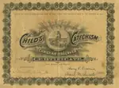
brn003-00008
Updated: 3 Apr 2006
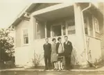
brn003-00009
Martha and Georgennea are the two women, but I don't recognize the two men. Captioned: "Fall 1935." (Looks kind of like Mike's printing?) Updated: 6 May 2006
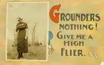
brn003-00010
Front of postcard sent from (I think) Georgennea to Taylor Brown. I think that's Georgennea in the picture. Updated: 6 May 2006
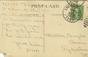
brn003-00010a
This postcard shows that Georgennea was in Sweetwater Tennesee in January, 1918 or 1919 (I can't quite make out the last digit). Also that she went by the nickname "Kirk." Updated: 6 May 2006
13 photos available in this directory.
Copyright © 2005–2026 Thomas Krehbiel. Images are freely distributable for personal use. For more information about these images contact Thomas Krehbiel (tkrehbiel@gmail.com).
Photos were scanned at either 300dpi or 600dpi, depending on the quality of the photograph. Slides were scanned at 1800dpi. Documents were scanned at 100dpi or 150dpi. Photoshop enhancements: most images have had their contrast improved. Some color photos were corrected to restore color balance. Some blurry images were mildly sharpened. Occasionally dust, scratches, and blemishes were removed digitally.